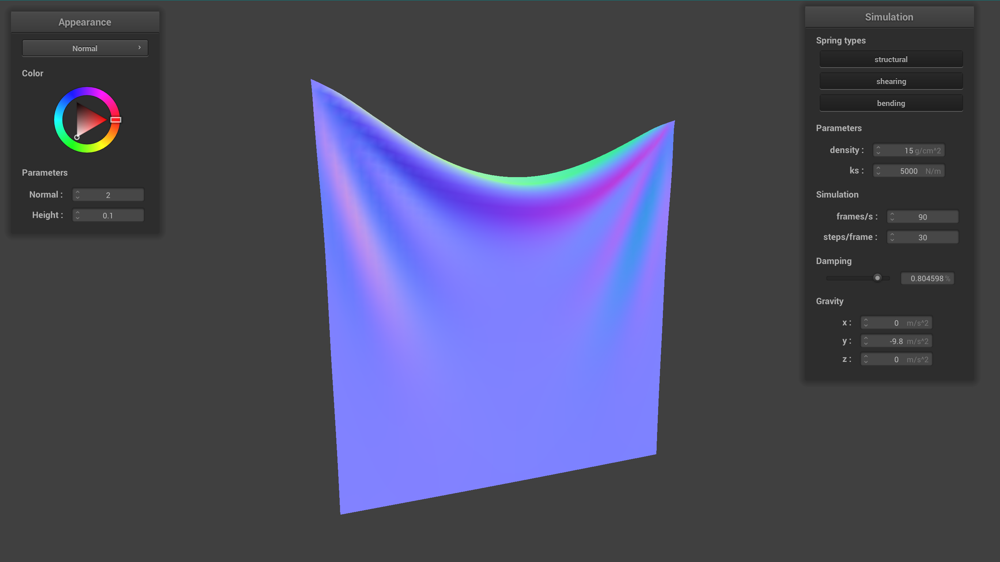
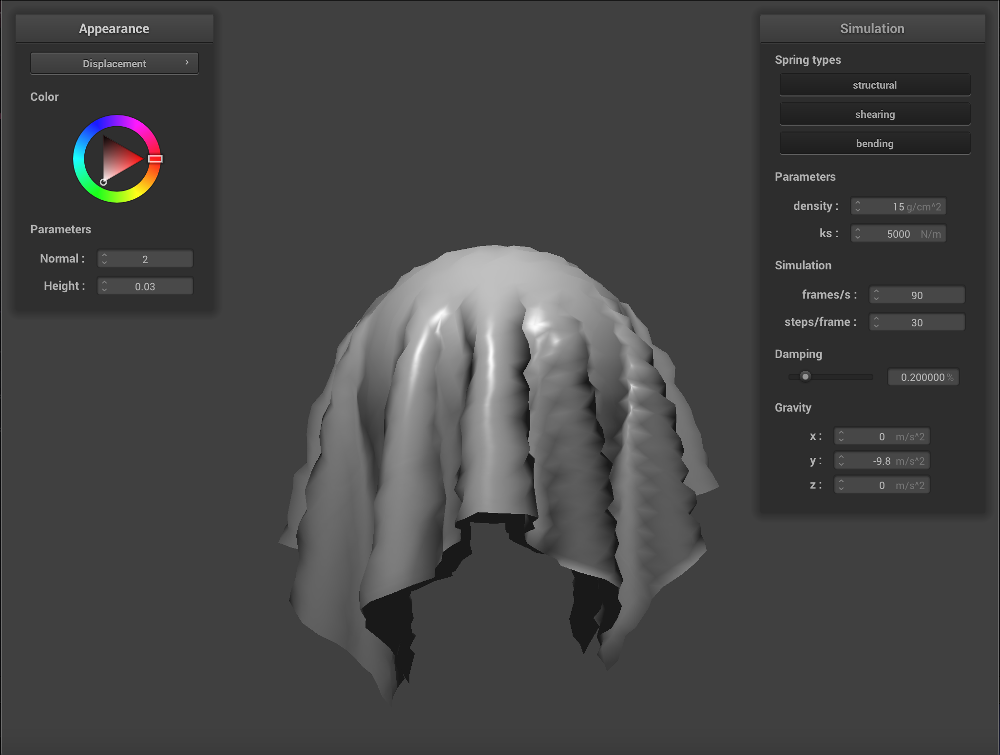

Overview
In this project, we implemented a cloth simulator that will simulate the physical properties of how a cloth would interact with its surroundings. These conditions include whether or not the cloth was pinned at a point, fell onto another object, or fell onto itself. Finally, we also created a variety of shaders that could be applied to our cloth, including diffuse, blinn-phong, texture, bump, displacement, and mirror materials. In implementing these properties, one of our main challenges was orienting ourselves around each of the iterative steps we had to take for each time step, point mass, spring, or collider object, and making sure that we weren’t looping more than we had to. A large part of this debugging process was stepping through our code and conceptually understanding the larger picture of what each larger loop was accomplishing.
Part I: Masses and springs
In the first part, we implemented a function that builds a grid of springs and masses. We first generated a grid of masses with positions that depend on whether or not the cloth’s orientation is horizontal or vertical. We then check if the current point mass is marked as ‘pinned’ in a vector that stores the indices of the pinned masses for each row. If so, we create that point mass and set its pinned status to true.
Next, we created a spring system that can apply structure, shear, and bending constraints between the point masses. For structural constraints, we add one new spring constraint to the point mass above and one to the left of the current point mass. Similarly, we add one to the diagonal upper left and one to the diagonal upper right for the shearing constraint. Lastly, for the bending constraint we add one spring two to the left and one two above.
Below, is the cloth wireframe thats shows the structure of the point masses and springs with different combinations of constraints applied:
|
|
|
|
Part II: Simulation via numerical integration
In this section, we implemented simulate, a function that will run through one times step of the cloth simulation. This simulation takes into account the two pinned points on the cloth, the external forces from gravity, and the internal spring forces of the cloth and visualizes how the cloth would then fall. For this simulation we want to change each point mass’s position according to how each of their positions are affected by all the forces acting on it. Thus, we first accumulate the total force from external accelerations to account for gravity. Then to consider the spring constraints we set in part 1, we iterate through all the springs, and if the current spring’s constraint is enabled we calculate the spring force using Hooke’s Law.
To ensure we are applying the spring force in the same direction as the current point mass, we calculate the unit vector from pm_a to pm_b and then multiply it by the spring force. We then add this force vector to one side of the spring and then subtract it from the other to ensure that we apply an equal but opposite force to each side of the point mass.
After this we iterate through each point mass and add the external force to the current point mass’ force. Then, only if the current point mass is not pinned, we adjust the mass’s position. We determine the new position using Verlet integration.
Finally, we set a bound on how much the cloth can stretch. First, we iterate through all the springs again, and check if the current spring length is greater than 1.1 * the rest length of the spring. If this condition is met, we find the difference between the current spring length and the max, and subtract it from the spring length based on three different cases. If both ends of the spring are not pinned, we divide the difference into two and add this value on one end and subtract it from the other. If side a is pinned, then we subtract the difference from side b. Then finally, if side b is pinned, we add the difference to side a.
Looking at how the ks values effects our simulation, we see that low ks causes more dense and fine creases in the cloth, whereas a higher ks results in smoother folds.
Looking at how the ks values affects our simulation, we see that low ks causes fewer creases throughout the cloth|
|
|
With a higher density, we feel a greater weight to the cloth as the middle section of the cloth sinks and creates thicker folds. In contrast, with a lower density, the middle section of the cloth bends slightly in the center, resulting in a more airy material.
|
|
|
Finally, the damping parameter takes into consideration the energy lost throughout the simulation due to external forces, and thus affects the speed at which the cloth falls. With a higher damping value, the cloth falls more slowly as if there is more friction acting on it. On the other hand, with a lower damping value the cloth falls more immediately because this would signify that there is less force working against the cloth.
|
|

|
|
|
|
|
|
|
|
|
Part III: Handling collisions with other objects
For this part, we added the ability for the cloth to collide with spheres and planes.
For each time step of the simulation, at every point mass, we iterate through all the Collision objects and call collide on the point mass.
Within the collide function itself, we then calculate if the current point mass’ position has intersected the surface of the object.
If it has, we will update the pm’s position to be a point slightly above where the tangent point would have been.
For spheres, we achieve this by calculating the distance from the pm’s position and the origin of the sphere and comparing it to the sphere’s radius length.
If the difference between the two is less than zero, we know that the cloth would have intersected the cloth.
In this case, we calculate the tangent point, making sure that the cloth’s path of travel is still along the norm of the vector between the current position and the origin.
This tangent is used to calculate a correction vector that we will then add to the pm’s last position.
Multiplying this value by a factor for friction then gives us the new final position for the pm.
For planes, we check the distances from the pm’s current and last position to the plane.
We calculate the dot product between the normal and each of these distances to check if the two vectors to the surfaces are on the same side.
If we multiply the results of these calculations and the value is less than 0, we know that the two vectors oppose each other and the current position has intersected the plane.
If this condition is met, we update the current pm’s position to be the last position + a correction vector, and finally take into account of friction.
Similarly to the previous section, the spring constant (ks) will inform how stiff the spring force is. We see this reflected in our cloth simulation acting on our sphere. At a higher ks value of 50000, our cloth has more structure and reads as more stiff in comparison to our default ks value of 5000. In contrast, at a lower ks value of 500, our cloth is more loose and drapes more organically over our sphere.
Sphere Collision:

|
|

|
Plane Collision:
|
|
Part IV: Handling Self-Collisions
In this part, we implemented cloth self-collision, which allows the cloth to come into contact with itself and not clip through. To do so, we first used a hash map to increase the speed when testing for a self-intersection. This hash map collects point masses that are spatially close together into the same buckets. We populated the map by creating unique floats to represent the point masses’ 3D coordinates and using these as keys to store the point masses. Next, we created a self_collide function that refers to the hash table and checks for possible collisions. It does so by first looking through each candidate in the hash map. It checks whether the point mass is 2 * thickness distance away from the current point mass being checked then accumulates corrections for each point mass in a pairwiseCorrectSum vector. Lastly, it averages the pairwiseCorrectSum vector by dividing by the number of points checked and the simulation_steps.
Self-collision demo with default settings:

|

|
|
Varying density values:

|
|
As we run the cloth simulation at different densities, we notice a difference in how the cloth folds over itself. With a lower density of 1 g/cm^2, the cloth appears lighter and has looser folds. In contrast, at a higher density of 30 g/cm^2, the cloth has more weight and will have more narrow and tight folds.
Varying spring constant (ks) values:
|
|

|
A low ks value of 2500 N/m leads to a more springy material. This causes the cloth to bounce around for a relatively longer period of time until it reaches its final resting state, at which point the cloth almost completely unfolds itself.
A high ks value of 7500 N/m leads to a much stiffer material. The cloth does not bounce around as much and is folded upon itself in its final resting state.
Part V: Shaders
In this final section, we implemented GLSL shaders.
A shader program uses a vertex shader and uses it as the input of a fragment shader.
Displacement uses vertex shaders to change geometry of the model itself by modifying the position of the vertices,
whereas fragment shaders process the attributes on fragments created after rasterization.
They then take geometric attributes created by the vertex shader as inputs and provide an output that tells the rendering program how to display the object.
The Blinn-Phong shading model adds together ambient, diffuse, and specular lighting to form its output light. The ambient lighting is a flat shader that does not account for difference in lighting and uses the same color across the entire object. Diffuse lighting takes the dot product of the direction towards the light source and the surface normal to accommodate for lighting conditions. However, it still appears matte. Finally, the specular lighting uses the incident light angle and the angle of view to calculate a half-vector. It then takes the dot product of the surface normal and this half-vector all raised to a power to create a shiny effect.
Blinn-Phong Breakdown:
|
|
|
|
|
|
Texture Mapping:
We then implemented texture mapping by creating a fragment shader that uses the texture() function to display an image texture on the object. More specifically, the texture function will sample a 2D texture based on a specific uv coordinate grid in order to map the shader onto any mesh.
Next, we implemented bump mapping and displacement mapping.
With displacement mapping, both the fragment shader and the vertex shader have been changed. In the screenshots below, it is evident that the silhouette of the sphere and cloth changes because the position of the vertices themselves get modified in the vertex shader. However, with bump mapping, only the fragment shader has been changed to affect the surface normals according to the information provided by the bump map texture.
Bump Mapping:
For bump mapping, to create the illusion that the shader has height to it, the bump texture changes the normals of a base material (such as diffuse or phong). T his will change how the light interacts with the shader, highlighting areas where the texture would be raised and adding shadows where there would be crevices in the material. However looking at the silhouette of the object, we see that the original mesh of the object remains unchanged despite the illusion of depth.
Displacement Mapping:
In contrast to bump mapping, displacement not only adjusts the normal of the material, but also adjusts the position of the objects’s vertices to physically change the model’s mesh. Thus, while we still see the light adding shadow and highlight according to the adjusted normals, we can also see based on the silhouette that the lighter parts of the texture are raised from the surface.
|  | |
Varying Coarseness Levels:
|
|

|
|
|
|
|
|
|
|
When coarseness = 16, it's difficult to differentiate between the bump and displacement shaders because they look very similar to one another. In this case, it might be more efficient to use a bump map since it takes less computational power and would visually carry the same effect. When courseness = 128, it is clearer that the displacement shader is changing the silhouette of the sphere and causing sharper edges on the cloth.
Environment-Mapped Reflections:
Lastly, we implemented a fragment shader that allows for environment-mapped reflections. We calculated the outgoing ray from the camera and reflected it across the surface normal. This created an mirror effect in which the material reflects the HDRI map surrounding it.